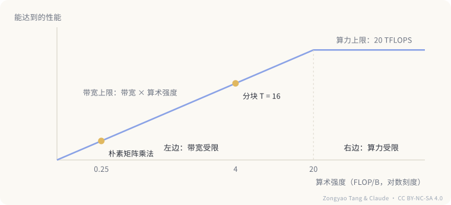
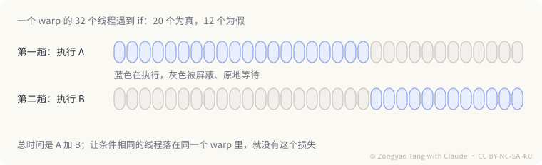

上一单元得到一个判断标准（算术强度）和一个办法（分块）。这一单元把它扩展成一套系统的方法：先用 Roofline 判断 kernel 撞的是哪面墙 → 带宽这面墙上，访问方式本身就能差出几倍（合并访存）→ 执行这一侧，warp 内的分歧会浪费算力（分支发散）→ 线程开得太细也有代价（粗化）→ 最后收成一张清单。
第 3 部分 · GPU 与 CUDA 执行模型3.4 CUDA 性能清单
这一单元回答kernel 写对了之后，怎样系统地让它变快？
承接 3.3：把硬件和内存层次的知识，变成一张可以逐项对照的优化清单。
- Roofline：先看你撞的是哪面墙
- 合并访存：一个 warp 的 32 次读，最好合成一次
- 分支发散：同一个 warp 走两条路，就要跑两趟
- 线程不是越多越好：有时让一个线程多干几份
- 优化清单的本质：让计算单元一直有活干
讲解
1Roofline：先看你撞的是哪面墙
一个 kernel 能达到的性能 ≤ min(峰值算力, 带宽 × 算术强度)。画出来是一条斜线（带宽墙）接一条水平线（算力墙），拐点处的算术强度就是这台机器的平衡点。
上一单元算过：kernel 的算术强度乘以显存带宽，就是带宽能支撑的最高运算速度。把这个关系画成图，就是 Roofline。
横轴是算术强度（FLOP/B），纵轴是能达到的性能（FLOP/s）。性能有两个上限：
- 带宽上限：性能 ≤ 带宽 × 算术强度。这是一条从原点出发的斜线。
- 算力上限：性能 ≤ 峰值算力。这是一条水平线。
两条线合起来像一个屋顶。拐点处的算术强度 = 峰值算力 ÷ 带宽，就是上一单元算出的那个 20 FLOP/B。

用讲解里的数字画的屋顶：带宽 1000 GB/s，峰值 20 TFLOPS，拐点在 20 FLOP/B 用法：算出你的 kernel 的算术强度，看它落在拐点的哪一边。
- 在左边（斜线下方）：带宽受限。提高性能的办法是向右移动，也就是提高算术强度：分块、融合、用更少的字节表示数据。在这里优化运算本身没有用。
- 在右边（水平线下方）：算力受限。这时才值得考虑 Tensor Core、更低的精度。
如果实测性能离屋顶还差很远，说明两者都没用满，问题出在别处：访存没有合并、warp 在发散、占用率太低，或者时间花在了开销上。这一单元剩下的几条，讲的就是这些“离屋顶还差很远”的原因。
动手：算出你自己显卡的拐点，并给常见算子定位
先查两个数（显卡规格页或 Wikipedia 上都有）：
- 显存带宽，单位 GB/s。
- 峰值算力，单位 TFLOPS。注意区分普通单精度（fp32）和用 Tensor Core 的半精度，后者高得多。
拐点 = 峰值算力 ÷ 带宽。比如带宽 1000 GB/s、fp32 算力 20 TFLOPS，拐点是 20 FLOP/B；如果用 Tensor Core 能到 300 TFLOPS，拐点就变成 300 FLOP/B，也就是说算力越强，越难把它喂饱。
再估算几个常见算子的算术强度（都用 fp32，一个数 4 字节）：
c = a + b：读 2 个数、写 1 个数共 12 字节，做 1 次运算，约 0.08 FLOP/B。- ReLU：读 4 字节、写 4 字节，1 次运算，约 0.13 FLOP/B。
- 朴素矩阵乘法：0.25 FLOP/B；16×16 分块后约 4 FLOP/B。
- 充分优化的大矩阵乘法（n×n）：做 2n³ 次运算，只需读写 3n² 个数。n = 4096 时约 680 FLOP/B。
把它们和拐点比：逐元素算子比拐点低两三个数量级，永远是带宽受限，优化它们只能靠少搬数据（融合，见 4.2）。大矩阵乘法远在拐点右边，是算力受限，才用得上 Tensor Core。
这也解释了一个常见现象：换了算力更强的新显卡，矩阵乘法快了很多，LayerNorm、激活函数这些却几乎没变，因为它们受的是带宽的限制。
打个比方像高速公路：车再快（算力），也受车道数（带宽）限制；车道够宽了，又会被车速上限卡住。
所以优化前先算 kernel 的算术强度：落在斜线区，就想办法少搬数据（融合、复用、低精度）；落在水平区，才值得换更快的计算（Tensor Core）。
出处PMPP 第 5 章 Roofline- 假设 kernel 是带宽受限的。同样读 1 GB 数据，读的方式不同，实际用掉的时间可以差好几倍。原因在显存的工作方式。
2合并访存：一个 warp 的 32 次读，最好合成一次
显存一次读出的是一整段连续的数据（DRAM burst）。如果一个 warp 的 32 个线程访问的地址正好连续，硬件会把它们合并成很少几次传输；地址分散则要传很多次，带宽大量浪费。
显存不是一个一个字节地往外送数据的。每次访问，它送出的是一整段连续的数据。如果你只要其中 4 个字节，其余的也照样被读出来，然后被丢掉。
再结合 warp 的工作方式：一个 warp 的 32 个线程同时执行同一条“读内存”的指令，硬件会看这 32 个地址。
- 如果它们是连续的（线程 0 读
a[0]，线程 1 读a[1]……），32 个 float 一共 128 字节，一两次传输就全部取回。这叫合并（coalesced）访问。 - 如果它们相隔很远（线程 0 读
a[0]，线程 1 读a[1000]……），就要发起 32 次传输，每次取回一大段却只用 4 个字节。有效带宽只剩下几十分之一。
同样读 32 个数，地址连不连续差出几十倍 具体到矩阵：C 语言里矩阵按行存，同一行的元素在内存里是挨着的。如果让相邻的线程处理同一行的相邻列（
a[row][threadIdx.x]），地址连续，是合并访问；如果让相邻的线程处理同一列的相邻行（a[threadIdx.x][col]），地址每次跳一整行，就不是。所以写 kernel 时要养成一个习惯：看每一条访存语句，问“threadIdx.x 加 1 时，地址是不是也只加 1 个元素”。算法确实需要按列访问时，可以先用合并的方式把一块数据搬进共享内存，再在共享内存里按任意顺序读，因为共享内存没有这个问题。
打个比方像公交按站接人：一站接满一车最省；如果 32 个乘客散在全城 32 个地方，就得跑 32 趟。
所以要让相邻线程（threadIdx.x 相邻）访问相邻地址：行优先存储的矩阵，就按行的方向分配线程。访问模式不好时，先合并地搬进共享内存，再在共享内存里换个方向读（corner turning）。
后面会用到 Triton 让你以“块”为单位思考出处PMPP §6.1PMPP §6.1 DRAM burst- 如果它们是连续的（线程 0 读
- 合并访存是 warp“一起访问内存”带来的要求。warp“一起执行指令”也带来一个对应的要求：大家最好走同一条路。
3分支发散：同一个 warp 走两条路，就要跑两趟
同一个 warp 的线程共用一条指令流。如果 if/else 让一部分线程走 A、另一部分走 B，硬件只能先执行 A（走 B 的线程闲着），再执行 B。
一个 warp 的 32 个线程共用一条指令流。遇到
if (条件) { A } else { B }时，如果 32 个线程的条件都为真，一起执行 A，没有任何问题。但如果其中 20 个为真、12 个为假，硬件没法让两拨线程同时执行不同的指令。它只能分两趟：先执行 A，这时那 12 个线程被屏蔽、原地等待；再执行 B，这时那 20 个线程等待。这个 warp 花了 A 加 B 的总时间，而每一趟里都有一部分运算单元闲着。

同一个 warp 走两条路，就要跑两趟 循环次数不一样也是同一回事：
for (k = 0; k < len[i]; k++)中各线程的len[i]不同时，整个 warp 要陪着循环次数最多的那个线程跑完，先结束的线程只能空等。要注意发散只发生在 warp 内部。如果第一个 warp 全部走 A，第二个 warp 全部走 B，两边都没有损失。所以减少发散的办法通常不是去掉分支，而是重新安排数据，让条件相同的元素落在同一个 warp 里。2.5 的归约里有一个漂亮的例子：算法完全不变，只改了下标的安排，发散就基本消失了。
越界检查
if (i < n)也是分支，但只有最后一个 warp 可能发散，可以忽略。打个比方方阵里一半人要做俯卧撑、一半人要做仰卧起坐，教官只能先喊一个口令，再喊另一个。
所以分支条件最好和 warp 对齐，让整个 warp 走同一边；以 warp 为单位一致的分支几乎没有代价，真正的代价来自 warp 内部的分歧。
后面会用到 让还在干活的线程挨在一起出处PMPP §4.5- 到这里的建议都是“让线程配合得更好”。还有一种情况是线程本身开得太多、太细了。
4线程不是越多越好：有时让一个线程多干几份
把工作拆到最细（一个线程一个元素）是有代价的：重复加载同样的数据、重复的同步和下标计算。如果硬件本来就同时跑不了那么多线程，多开的部分只是在排队。线程粗化（thread coarsening）让一个线程处理多个元素，把这些重复开销摊薄。
把工作拆成尽可能多的线程，并不是免费的。并行有它的“价格”：
- 不同线程可能各自加载同一份数据；
- 每个 block 都要做一遍同步、算一遍下标；
- 每多一个 block，就多占一份共享内存。
如果硬件真的能让这些线程同时运行，这个价格是值得的。但当线程数远超硬件的并行能力时，多出来的 block 只是在排队，等前面的做完才轮到它。这时并行的价格付了，却没有换来并行的好处。
线程粗化就是让一个线程（或一个 block）多做几份工作。以分块矩阵乘法为例：原来一个 block 算 C 的一个小块，需要加载 A 的一个小块和 B 的一个小块。水平相邻的几个输出小块用的是 A 的同一个小块。粗化后，一个 block 连续算 4 个相邻的输出小块，A 的小块只加载 1 次而不是 4 次。
粗化不是越多越好。线程变少后，SM 上的候补 warp 也变少，掩盖延迟的能力下降（见 3.3）。所以它是一个需要实测的参数：从不粗化开始，逐步加大，性能先升后降，取最高点。
打个比方搬家时每人只搬一本书，楼梯上挤满了人，还都要来回跑；每人抱一摞书反而更快。
所以并行度够用之后，适当粗化常常能提速；但粗化过头会让线程太少、藏不住延迟（见 3.3），要在两者之间试出平衡点。
出处PMPP §6.3- 几条建议看下来有些零散。把它们和上一单元的分块放在一起，其实是在回答同一个问题。
5优化清单的本质：让计算单元一直有活干
PMPP 的优化清单（提高占用率、合并访存、减少分支发散、分块复用数据、私有化、线程粗化）看起来零散，其实都在解决同一件事：减少等待，不管是等数据、线程闲着，还是重复劳动。
把这两个单元学到的手段按“它在消除哪一种等待”排一下：
- 等数据从显存来：合并访存（让每次传输都不浪费）、分块（让搬来的数据多用几次）。
- 等数据时没有别的活可干：提高占用率（让 SM 上有足够的候补 warp）。
- warp 里一部分线程在陪跑：减少分支发散。
- 重复劳动、排队：线程粗化；私有化（每个线程先在自己的寄存器或共享内存里累计，最后再合并到公共位置，避免大家抢着改同一个地方）。
这样看，清单不是六条要背的规则，而是一个诊断流程：先用 Roofline 判断在哪面墙附近，再问运算单元在等什么，然后找对应的那一项。
工具上，Nsight Compute 会给出每个 kernel 的实测指标：显存带宽用了百分之多少、占用率是多少、有多少比例的指令处于发散状态。这些数字和清单上的项目是一一对应的。养成“先看指标，再选手段”的习惯，比记住任何一条技巧都重要。
打个比方像管一间厨房：备料到位、动线顺畅、没人闲着，出菜自然就快。
所以拿到一个慢 kernel，先问“它在等什么”，再对照清单，比随手乱试有效得多；Nsight Compute 的各项指标，就是在告诉你它在等什么。
后面会用到 追 cuBLAS：知道差在哪，比追平更重要出处PMPP §6.4
串起来
先判断：算术强度低就是带宽受限，高就是算力受限。带宽受限时，让访存合并、让数据复用；算力被浪费时，查分支发散和占用率；并行过头时，做线程粗化。清单上的每一项，都是在回答“计算单元在等什么”。
考考自己
不看讲解，用自己的话讲一遍。
- Roofline 模型怎么判断一个 kernel 是带宽受限还是算力受限？
- 什么是合并访存？为什么按行存的矩阵要让相邻线程访问同一行里相邻的元素？
- 分支发散是怎么产生的？代价是什么？
- 什么是线程粗化？什么情况下它有用？
- PMPP 的优化清单有哪几项？它们共同在解决什么问题？
术语
- memory coalescing
- 合并访存
- warp divergence
- 分支发散
- thread coarsening
- 线程粗化
- roofline model
- 屋顶线模型